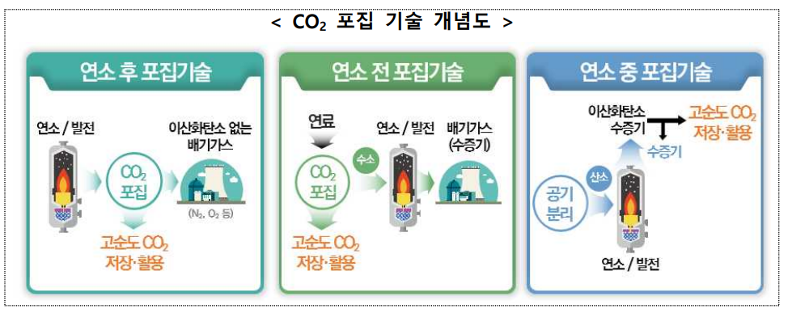
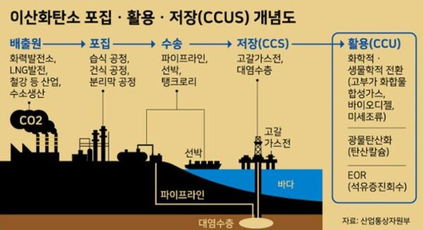
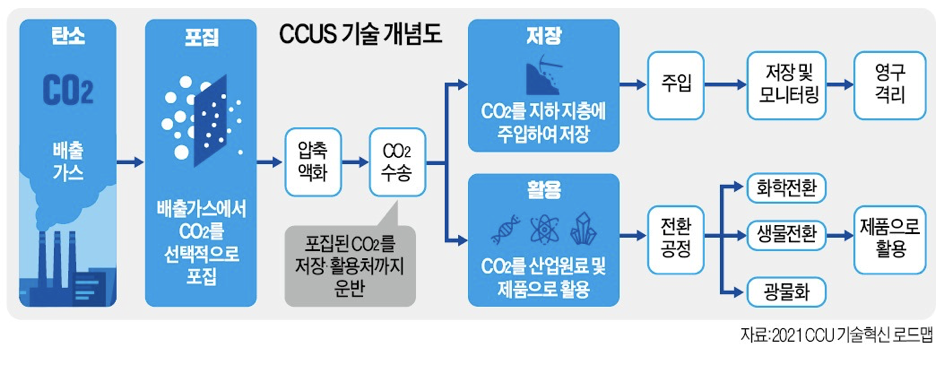

☁️CCUS 기술이란?
CCUS 기술은 최근에 주목을 받아 새롭게 등장한 것처럼 보이지만 1930년대에 처음으로 개발되어 100년 정도의 역사가 있는 기술이다.
CCUS 기술이 개발된 목적은 기후 변화의 주요 원인 중 하나인 이산화탄소 배출을 관리하고 감소시키기 위해 개발된 기술이며
또한 이 기술은 2050년까지 이산화탄소 배출량을 제로로 만드는 탄소 중립 시나리오를 실현시킬 핵심 기술 중 하나이다.
🏭CCUS 기술 활용 과정
| 과정 | |
|---|---|
|  | 이산화탄소 포집 단계 산업 시설에서 발생하는 이산화탄소를 대기 중으로 방출되기 전에 포집하는 단계로 3가지 기술을 사용한다. 1. 사전 연소 포집: 연료를 연소하기 전에 이산화탄소를 분리하는 방법 2. 후 연소 포집: 연소 후 발생하는 배기가스로 부터 이산화탄소를 분리해내는 방법 3. 산소 연소 기술: 연료를 순수 산소와 반응시켜 연소 시키는 방법 |
| 이산화탄소 활용 단계 포집된 이산화탄소를 다양한 방식으로 재활용해 경제적 가치를 창출해내는 단계이다. 예를 들면, 화학 원료는 플라스틱이나 건축자재로 쓰일 수 있고 온실가스는 식물의 성장을 촉진시키는데 쓰일 수 있으며 또한 이산화탄소를 지하에 주입하여 석유 및 가스의 회수율을 높이는데에도 사용할 수가 있다. |
 |
|  | 이산화탄소 저장 단계 포집된 이산화탄소를 대기 중으로 방출되지 않도록 지하 깊은 곳에 영구적으로 저장하는 과정이다. 저장가능한 장소로 1. 깊은 소금수층: 소금수층은 투과성이 낮은 암석층에 의해 둘러싸인 지하수층으로 이산화탄소를 안전하세 저장할 수 있다. 2. 이산화탄소를 특정광물과 반응시켜 고체 형태로 변환하여 저장하는 방법 3. 기름과 가스가 있던 공간 |
📈CCUS 기술 현황
| 년도 | 배출량 |
|---|---|
| 2022년 | 53.8 GT |
| 2010년 대비 | 2.13% 증가 |
| 1990년 대비 | 40.43% 증가 |